In hand141
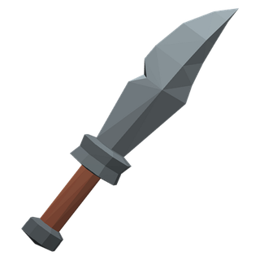
Rusty DaggerSold by Tea-Seller Moti in Dewstep.A Piercing weapon: 3 damage every 2.4 seconds, about 1.2 a second.Wants warriors, wizards, rogues, magicians, necromancers, shamans and rangers only.Worth 1 silver and 2 copper.
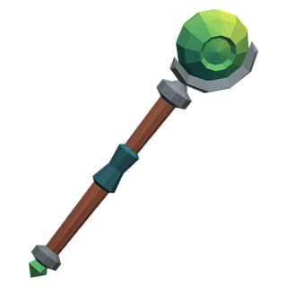
Worn StaffSold by Tea-Seller Moti in Dewstep.A 2H Blunt weapon: 4 damage every 2.6 seconds, about 1.5 a second.+5 mana.Worth 1 silver and 5 copper.
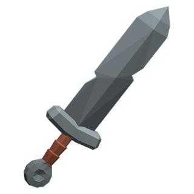
Rusty Short SwordA 1H Slashing weapon: 4 damage every 2.8 seconds, about 1.4 a second.Wants warriors, rogues and rangers only.Worth 1 silver and 8 copper.
A 2H Blunt weapon: 1 damage every 4 seconds, about 0.2 a second.Worth 2 silver and 5 copper.
A Piercing weapon: 4 damage every 2.2 seconds, about 1.8 a second.Wants warriors, wizards, rogues, magicians, necromancers, shamans and rangers only.Worth 9 silver.
A 2H Blunt weapon: 5 damage every 2.5 seconds, about 2.0 a second.+1 wisdom, +1 intellect and +10 mana.Worth 1 gold and 1 silver.
A 1H Slashing weapon: 5 damage every 2.6 seconds, about 1.9 a second.Wants warriors, rogues and rangers only.Worth 1 gold and 4 silver.
A 1H Slashing weapon: 6 damage every 3 seconds, about 2.0 a second.Wants warriors only.Worth 1 gold and 5 silver.
A 1H Slashing weapon: 6 damage every 2.6 seconds, about 2.3 a second.+1 strength and +1 agility.Wants warriors and rangers only.Never leaves you, only one at a time and worth 2 gold and 4 silver.
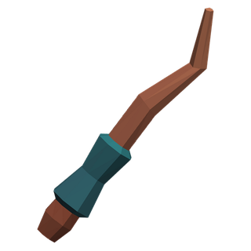
Frost-Etched WandA 1H Blunt weapon: 3 damage every 3 seconds, about 1.0 a second.+2 intellect.Sometimes Blast of Frost (10% of hits).Wants wizards, magicians and necromancers only.Only one at a time and worth 4 gold and 2 silver.
Forged Iron Dagger
A Piercing weapon: 5 damage every 2.2 seconds, about 2.3 a second.Wants level 5 and warriors, wizards, rogues, magicians, necromancers, shamans and rangers only.Worth 1 gold and 2 silver.
Ember-Touched Blade
A 1H Slashing weapon: 6 damage every 2.6 seconds, about 2.3 a second.Sometimes Burning Embers (12% of hits).Wants level 5 and warriors only.Only one at a time and worth 4 gold and 5 silver.
A Piercing weapon: 5 damage every 2.2 seconds, about 2.3 a second.+1 agility.Wants level 6 and warriors, wizards, rogues, magicians, necromancers, shamans and rangers only.Only one at a time and worth 3 gold and 8 silver.
A Piercing weapon: 5 damage every 2.2 seconds, about 2.3 a second.+1 agility.Sometimes Cobra Venom (6% of hits).Wants level 6 and warriors, wizards, rogues, magicians, necromancers, shamans and rangers only.Never leaves you, only one at a time and worth 4 gold.
Hollow Tender's RodThe rod a crystal-tender taps a crystal with to hear whether it's sound. This one's tender never came back up.Dropped by the Hollow Tender. A 1H Blunt weapon: 6 damage every 2.8 seconds, about 2.1 a second.+2 wisdom.Wants level 6 and warriors, clerics, shamans, wizards, magicians and necromancers only.Only one at a time and worth 4 gold.
A 1H Blunt weapon: 7 damage every 3 seconds, about 2.3 a second.+2 strength.Wants level 6 and warriors, clerics, shamans and rangers only.Only one at a time and worth 4 gold and 2 silver.
Pondkin Reed Spear
A Piercing weapon: 7 damage every 2.8 seconds, about 2.5 a second.+1 strength.Wants level 7.Never leaves you, only one at a time and worth 5 gold.
Garrick's Cutlass
A 1H Slashing weapon: 7 damage every 2.6 seconds, about 2.7 a second.+1 strength and +2 agility.Wants level 7.Worth 9 gold.
Grubnak's Cleaver
A 1H Slashing weapon: 8 damage every 3 seconds, about 2.7 a second.+3 strength, +5 health and +8% attack speed.Sometimes Burning Embers (8% of hits).Wants level 7 and warriors only.Only one at a time and worth 9 gold.
Forged Iron Sword
A 1H Slashing weapon: 7 damage every 2.7 seconds, about 2.6 a second.Wants level 8 and warriors, rogues and rangers only.Worth 2 gold.
Orcish Cleaver
A 1H Slashing weapon: 7 damage every 3 seconds, about 2.3 a second.Wants level 8.Worth 2 gold and 6 silver.
Rattlejaw's Cleaver
A 1H Slashing weapon: 8 damage every 2.7 seconds, about 3.0 a second.+2 strength.Wants level 8.Worth 7 gold.
Deepwatch BladeA sentinel's sword from the Duskhold armory, given by one who was told she'd never draw from it again.Given for Light for the Lamp-Keeper (4). A 1H Slashing weapon: 8 damage every 2.6 seconds, about 3.1 a second.+2 strength and +10 health.Wants level 8 and warriors, rogues and rangers only.Never leaves you, only one at a time and worth 8 gold.
Deepwatch DirkA sentinel's off-hand blade from the Duskhold armory, given by one who was told she'd never draw from it again.Given for Light for the Lamp-Keeper (4). A Piercing weapon: 6 damage every 2 seconds, about 3.0 a second.+3 agility and +5 health.Wants level 8 and warriors, wizards, rogues, magicians, necromancers, shamans and rangers only.Never leaves you, only one at a time and worth 8 gold.
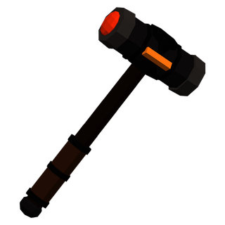
Deepwatch MaceA sentinel-chaplain's mace from the Duskhold armory, given by one who was told she'd never draw from it again.Given for Light for the Lamp-Keeper (4).A 1H Blunt weapon: 7 damage every 2.8 seconds, about 2.5 a second.+3 wisdom and +10 mana.Wants level 8 and warriors, clerics and shamans only.Never leaves you, only one at a time and worth 8 gold.
Deepwatch WandA watch-mage's wand from the Duskhold armory, tipped with a chip of glow crystal. Given by one who was told she'd never draw from it again.Given for Light for the Lamp-Keeper (4). A 1H Blunt weapon: 4 damage every 2.8 seconds, about 1.4 a second.+3 intellect and +15 mana.Wants level 8 and wizards, magicians and necromancers only.Never leaves you, only one at a time and worth 8 gold.
A Piercing weapon: 6 damage every 2.2 seconds, about 2.7 a second.+2 agility and +5 health.Sometimes Blight Venom (8% of hits).Wants level 8 and warriors, wizards, rogues, magicians, necromancers, shamans and rangers only.Only one at a time and worth 9 gold.
A Piercing weapon: 7 damage every 2.2 seconds, about 3.2 a second.Wants level 9 and warriors, rogues, wizards, magicians, necromancers, shamans and rangers only.Worth 6 gold and 5 silver.
A 1H Slashing weapon: 9 damage every 2.8 seconds, about 3.2 a second.Wants level 9 and warriors, rogues and rangers only.Worth 7 gold.
A Piercing weapon: 6 damage every 2.1 seconds, about 2.9 a second.+2 agility.Wants level 9 and warriors, wizards, rogues, magicians, necromancers, shamans, rangers and clerics only.Never leaves you, only one at a time and worth 9 gold.
A 1H Slashing weapon: 8 damage every 2.5 seconds, about 3.2 a second.+2 strength and +1 agility.Wants level 9.Never leaves you, only one at a time and worth 1 platinum and 2 gold.
Mirescale Warstaff
A 2H Blunt weapon: 8 damage every 3 seconds, about 2.7 a second.Wants level 10.Worth 3 gold and 2 silver.
Reed-bound Wand
A 1H Blunt weapon: 4 damage every 2.8 seconds, about 1.4 a second.+2 wisdom, +2 intellect and +10 mana.Wants level 10.Worth 3 gold and 8 silver.
A 1H Slashing weapon: 10 damage every 3 seconds, about 3.3 a second.Wants level 10 and warriors only.Worth 7 gold and 2 silver.
A Piercing weapon: 7 damage every 2.2 seconds, about 3.2 a second.+2 agility.Sometimes Thornback Venom (10% of hits).Wants level 10.Worth 1 platinum and 2 gold.
A 1H Slashing weapon: 10 damage every 2.6 seconds, about 3.8 a second.+3 strength and +2 stamina.Wants level 12.Never leaves you, only one at a time and worth 1 platinum and 8 gold.
Bloodtusk Warcleaver
A 1H Slashing weapon: 10 damage every 3 seconds, about 3.3 a second.+3 strength and +2 stamina.Sometimes Spirit Bolt (8% of hits).Wants level 12 and warriors only.Worth 2 platinum and 4 gold.
Drowned Captain's Cutlass
A 1H Slashing weapon: 11 damage every 2.8 seconds, about 3.9 a second.+2 strength and +2 stamina.Sometimes Drowning Cold (8% of hits).Wants level 13.Worth 2 platinum and 6 gold.
A 1H Slashing weapon: 11 damage every 2.8 seconds, about 3.9 a second and 2 armour.+2 strength, +2 stamina and +2 agility.Wants level 13.Never leaves you, only one at a time and worth 2 platinum and 6 gold.
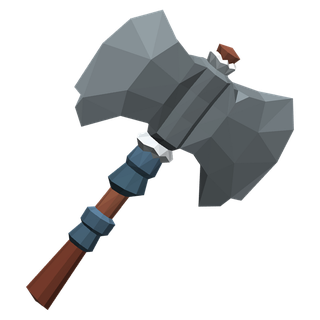
Ssrakka's GlaiveA 1H Slashing weapon: 12 damage every 3.2 seconds, about 3.8 a second.+3 strength and +2 agility.Sometimes Marsh Bolt (8% of hits).Wants level 13.Worth 2 platinum and 8 gold.
Cultist's Staff
A 2H Blunt weapon: 10 damage every 3.2 seconds, about 3.1 a second.+2 wisdom, +2 intellect and +15 mana.Wants level 14.Worth 9 gold.
A 1H Slashing weapon: 10 damage every 2.6 seconds, about 3.8 a second.+2 strength, +2 agility and +12 health.Wants level 14 and warriors, rogues, rangers and shamans only.Never leaves you, only one at a time and worth 2 platinum and 6 gold.
Forged Steel Axe
A 1H Slashing weapon: 13 damage every 3 seconds, about 4.3 a second.Wants level 15 and warriors only.Worth 1 platinum and 4 gold.
A Piercing weapon: 9 damage every 2.2 seconds, about 4.1 a second.Wants level 16 and warriors, rogues, wizards, magicians, necromancers, shamans and rangers only.Worth 2 platinum and 4 gold.
A 1H Slashing weapon: 13 damage every 3.1 seconds, about 4.2 a second.Wants level 16 and warriors only.Worth 2 platinum and 6 gold.
A 2H Blunt weapon: 11 damage every 3.2 seconds, about 3.4 a second.+3 wisdom, +3 intellect and +25 mana.Wants level 16 and clerics, wizards, magicians, necromancers and shamans only.Worth 2 platinum and 6 gold.
A 1H Slashing weapon: 12 damage every 2.9 seconds, about 4.1 a second.Wants level 16 and warriors, rogues and rangers only.Worth 2 platinum and 8 gold.
Raider's Scimitar
A 1H Slashing weapon: 13 damage every 2.7 seconds, about 4.8 a second.+2 agility.Wants level 17.Worth 2 platinum and 4 gold.
A 1H Blunt weapon: 14 damage every 3 seconds, about 4.7 a second.+3 strength and +2 stamina.Wants level 17.Never leaves you, only one at a time and worth 3 platinum.
A 1H Slashing weapon: 13 damage every 3 seconds, about 4.3 a second.+3 strength and +2 stamina.Sometimes Sunfire (6% of hits).Wants level 17 and warriors, rogues, clerics and rangers only.Never leaves you, only one at a time and worth 4 platinum.
Troll Club
A 2H Blunt weapon: 14 damage every 3.4 seconds, about 4.1 a second.+2 strength.Wants level 18.Worth 9 gold.
A 1H Slashing weapon: 13 damage every 2.8 seconds, about 4.6 a second.+2 strength and +2 stamina.Wants level 18 and warriors, rogues, rangers and shamans only.Never leaves you, only one at a time and worth 3 platinum and 6 gold.
A 1H Slashing weapon: 15 damage every 2.8 seconds, about 5.4 a second.+3 strength, +3 agility and +20 health.Sometimes Scorpion Venom (7% of hits).Wants level 19 and warriors, rogues and rangers only.Never leaves you, only one at a time and worth 6 platinum.
Forged Steel Greataxe
A 2H Blunt weapon: 23 damage every 3.8 seconds, about 6.1 a second.+3 strength.Wants level 20 and warriors only.Worth 4 platinum.
A 2H Blunt weapon: 20 damage every 3.8 seconds, about 5.3 a second.+5 strength and +3 stamina.Wants level 20 and warriors only.Worth 8 platinum.
Coral DirkSold by Weaponsmith Ifeoma in Rainhold. A Piercing weapon: 11 damage every 2.2 seconds, about 5.0 a second.Wants level 21 and warriors, rogues, wizards, magicians, necromancers, shamans and rangers only.Worth 4 platinum and 6 gold.
Driftwood StaffSold by Weaponsmith Ifeoma in Rainhold. A 2H Blunt weapon: 13 damage every 3.2 seconds, about 4.1 a second.+4 wisdom, +4 intellect and +35 mana.Wants level 21 and clerics, wizards, magicians, necromancers and shamans only.Worth 5 platinum.
Tidesteel War AxeSold by Weaponsmith Ifeoma in Rainhold. A 1H Slashing weapon: 16 damage every 3.1 seconds, about 5.2 a second.Wants level 21 and warriors only.Worth 5 platinum.
Tidesteel SwordSold by Weaponsmith Ifeoma in Rainhold. A 1H Slashing weapon: 15 damage every 2.9 seconds, about 5.2 a second.Wants level 21 and warriors, rogues and rangers only.Worth 5 platinum and 2 gold.
A 2H Blunt weapon: 13 damage every 3.1 seconds, about 4.2 a second.+5 wisdom, +5 intellect, +20 health and +45 mana.Wants level 21 and clerics, wizards, magicians, necromancers and shamans only.Only one at a time and worth 9 platinum.
Tidesteel GreataxeSold by Weaponsmith Ifeoma in Rainhold. A 2H Blunt weapon: 24 damage every 3.8 seconds, about 6.3 a second.Wants level 22 and warriors only.Worth 5 platinum and 6 gold.
A 2H Blunt weapon: 14 damage every 3.1 seconds, about 4.5 a second.+5 wisdom, +5 intellect and +50 mana.Wants level 22 and clerics, wizards, magicians, necromancers and shamans only.Never leaves you, only one at a time and worth 6 platinum.
A 1H Slashing weapon: 17 damage every 2.8 seconds, about 6.1 a second.+4 strength, +3 agility and +30 health.Sometimes Drowning Cold (7% of hits).Wants level 22 and warriors, rogues and rangers only.Never leaves you, only one at a time and worth 8 platinum.
Mudtooth Maul
A 2H Blunt weapon: 27 damage every 4 seconds, about 6.8 a second.+6 strength, +4 stamina and +2 health regeneration.Wants level 23 and warriors only.Worth 9 platinum.
A 2H Blunt weapon: 14 damage every 3.2 seconds, about 4.4 a second.+6 wisdom, +6 intellect and +60 mana.Sometimes Storm Bolt (6% of hits).Wants level 23 and clerics, wizards, magicians, necromancers and shamans only.Worth 9 platinum.
A 1H Blunt weapon: 15 damage every 3 seconds, about 5.0 a second.+4 strength, +4 stamina and +30 health.Wants level 24.Only one at a time and worth 9 platinum.
A 1H Slashing weapon: 16 damage every 2.6 seconds, about 6.2 a second.+4 strength, +4 agility and +25 health.Wants level 25 and warriors, rogues and rangers only.Never leaves you, only one at a time and worth 9 platinum.
A 1H Slashing weapon: 15 damage every 2.4 seconds, about 6.2 a second.+3 strength and +5 agility.Wants level 25 and warriors, rogues and rangers only.Never leaves you, only one at a time and worth 10 platinum.
A 2H Blunt weapon: 15 damage every 3.2 seconds, about 4.7 a second.+5 wisdom, +5 intellect and +50 mana.Wants level 25 and clerics, wizards, magicians, necromancers and shamans only.Never leaves you, only one at a time and worth 10 platinum.
A 1H Slashing weapon: 17 damage every 2.8 seconds, about 6.1 a second.+4 strength, +3 agility and +30 health.Wants level 25 and warriors, rogues and rangers only.Never leaves you, only one at a time and worth 11 platinum.
A Piercing weapon: 14 damage every 2.2 seconds, about 6.4 a second.Wants level 27 and warriors, rogues, wizards, magicians, necromancers, shamans and rangers only.Worth 7 platinum and 4 gold.
Cinderwood StaffSold by Smith Tovar in Cinderpass. A 2H Blunt weapon: 16 damage every 3.2 seconds, about 5.0 a second.+6 wisdom, +6 intellect and +55 mana.Wants level 27 and clerics, wizards, magicians, necromancers and shamans only.Worth 8 platinum.
Emberforged War AxeSold by Smith Tovar in Cinderpass. A 1H Slashing weapon: 20 damage every 3.1 seconds, about 6.5 a second.Wants level 27 and warriors only.Worth 8 platinum.
Emberforged SwordSold by Smith Tovar in Cinderpass. A 1H Slashing weapon: 19 damage every 2.9 seconds, about 6.6 a second.Wants level 27 and warriors, rogues and rangers only.Worth 8 platinum and 2 gold.
A Piercing weapon: 15 damage every 2.1 seconds, about 7.1 a second.+4 agility.Sometimes Naga Venom (6% of hits).Wants level 27 and warriors, rogues, wizards, magicians, necromancers, shamans and rangers only.Worth 9 platinum.
A 1H Slashing weapon: 20 damage every 2.8 seconds, about 7.1 a second.+3 strength and +3 agility.Wants level 27 and warriors, rogues and rangers only.Worth 9 platinum.
Emberforged GreataxeSold by Smith Tovar in Cinderpass. A 2H Blunt weapon: 30 damage every 3.8 seconds, about 7.9 a second.Wants level 28 and warriors only.Worth 9 platinum.
A 1H Slashing weapon: 21 damage every 2.8 seconds, about 7.5 a second.+5 strength, +4 agility and +30 health.Wants level 29 and warriors, rogues and rangers only.Never leaves you, only one at a time and worth 14 platinum.
A 1H Slashing weapon: 22 damage every 2.8 seconds, about 7.9 a second.+5 strength, +4 agility and +40 health.Sometimes Elemental Flame (7% of hits).Wants level 29 and warriors, rogues and rangers only.Never leaves you, only one at a time and worth 14 platinum.
A Piercing weapon: 15 damage every 2.2 seconds, about 6.8 a second.+5 agility.Sometimes Naga Venom (7% of hits).Wants level 29 and warriors, rogues, wizards, magicians, necromancers, shamans and rangers only.Never leaves you, only one at a time and worth 14 platinum.
A 1H Slashing weapon: 24 damage every 3.1 seconds, about 7.7 a second.+6 strength, +4 stamina and +40 health.Wants level 31 and warriors only.Never leaves you, only one at a time and worth 18 platinum.
A 2H Blunt weapon: 18 damage every 3.2 seconds, about 5.6 a second.+7 wisdom, +7 intellect and +65 mana.Sometimes Lightning Lash (6% of hits).Wants level 31 and clerics, wizards, magicians, necromancers and shamans only.Never leaves you, only one at a time and worth 18 platinum.
Blackglass DirkSold by Weaponsmith Teodor in Forgehold. A Piercing weapon: 17 damage every 2.2 seconds, about 7.7 a second.Wants level 32 and warriors, rogues, wizards, magicians, necromancers, shamans and rangers only.Worth 11 platinum and 1 gold.
Forgeheart StaffSold by Weaponsmith Teodor in Forgehold. A 2H Blunt weapon: 19 damage every 3.2 seconds, about 5.9 a second.+8 wisdom, +8 intellect and +75 mana.Wants level 32 and clerics, wizards, magicians, necromancers and shamans only.Worth 12 platinum.
Magmasteel War AxeSold by Weaponsmith Teodor in Forgehold. A 1H Slashing weapon: 24 damage every 3.1 seconds, about 7.7 a second.Wants level 32 and warriors only.Worth 12 platinum.
Magmasteel SwordSold by Weaponsmith Teodor in Forgehold. A 1H Slashing weapon: 23 damage every 2.9 seconds, about 7.9 a second.Wants level 32 and warriors, rogues and rangers only.Worth 12 platinum and 3 gold.
Magmasteel GreataxeSold by Weaponsmith Teodor in Forgehold. A 2H Blunt weapon: 36 damage every 3.8 seconds, about 9.5 a second.Wants level 33 and warriors only.Worth 13 platinum and 5 gold.
A 1H Blunt weapon: 15 damage every 2.8 seconds, about 5.4 a second.+7 wisdom, +7 intellect and +60 mana.Wants level 33 and clerics, wizards, magicians, necromancers and shamans only.Never leaves you, only one at a time and worth 18 platinum.
A 1H Blunt weapon: 24 damage every 2.8 seconds, about 8.6 a second.+5 strength, +4 stamina and +30 health.Wants level 33.Never leaves you, only one at a time and worth 20 platinum.
A 2H Blunt weapon: 39 damage every 3.8 seconds, about 10.3 a second.+6 strength, +4 stamina and +50 health.Sometimes Searing Blow (6% of hits).Wants level 34 and warriors, clerics and shamans only.Never leaves you, only one at a time and worth 22 platinum.
A Piercing weapon: 19 damage every 2.1 seconds, about 9.0 a second.+6 agility.Sometimes Glass Venom (7% of hits).Wants level 35 and warriors, rogues, wizards, magicians, necromancers, shamans and rangers only.Never leaves you, only one at a time and worth 24 platinum.
A 1H Slashing weapon: 26 damage every 2.8 seconds, about 9.3 a second.+6 strength, +5 agility and +50 health.Sometimes Shard Burst (6% of hits).Wants level 35 and warriors, rogues and rangers only.Never leaves you, only one at a time and worth 26 platinum.
Zephyr DirkSold by Weaponsmith Ansel in Galehold. A Piercing weapon: 20 damage every 2.2 seconds, about 9.1 a second.Wants level 37 and warriors, rogues, wizards, magicians, necromancers, shamans and rangers only.Worth 16 platinum.
Skyforged War AxeSold by Weaponsmith Ansel in Galehold. A 1H Slashing weapon: 28 damage every 3.1 seconds, about 9.0 a second.Wants level 37 and warriors only.Worth 17 platinum.
Stormwood StaffSold by Weaponsmith Ansel in Galehold. A 2H Blunt weapon: 22 damage every 3.2 seconds, about 6.9 a second.+10 wisdom, +10 intellect and +95 mana.Wants level 37 and clerics, wizards, magicians, necromancers and shamans only.Worth 17 platinum.
Skyforged SwordSold by Weaponsmith Ansel in Galehold. A 1H Slashing weapon: 27 damage every 2.9 seconds, about 9.3 a second.Wants level 37 and warriors, rogues and rangers only.Worth 17 platinum and 5 gold.
A 1H Slashing weapon: 28 damage every 2.7 seconds, about 10.4 a second.+6 strength, +6 agility and +50 health.Wants level 37 and warriors, rogues and rangers only.Never leaves you, only one at a time and worth 26 platinum.
A 2H Blunt weapon: 44 damage every 3.8 seconds, about 11.6 a second.+8 strength, +6 stamina and +60 health.Wants level 37 and warriors, clerics and shamans only.Never leaves you, only one at a time and worth 28 platinum.
Skyforged GreataxeSold by Weaponsmith Ansel in Galehold. A 2H Blunt weapon: 42 damage every 3.8 seconds, about 11.1 a second.Wants level 38 and warriors only.Worth 19 platinum.
A 1H Slashing weapon: 27 damage every 2.7 seconds, about 10.0 a second.+6 strength, +6 agility and +45 health.Sometimes Choking Smoke (7% of hits).Wants level 38 and warriors, rogues and rangers only.Never leaves you, only one at a time and worth 30 platinum.
A Piercing weapon: 21 damage every 2.1 seconds, about 10.0 a second.+7 agility.Wants level 39 and warriors, rogues, wizards, magicians, necromancers, shamans and rangers only.Never leaves you, only one at a time and worth 28 platinum.
A 1H Slashing weapon: 26 damage every 2.5 seconds, about 10.4 a second.+5 strength and +8 agility.Wants level 39 and warriors, rogues and rangers only.Never leaves you, only one at a time and worth 28 platinum.
A 2H Blunt weapon: 46 damage every 3.8 seconds, about 12.1 a second.+9 strength, +7 stamina and +70 health.Sometimes Searing Blow (6% of hits).Wants level 39 and warriors, clerics and shamans only.Never leaves you, only one at a time and worth 32 platinum.
A 2H Blunt weapon: 23 damage every 3.2 seconds, about 7.2 a second.+11 wisdom, +11 intellect and +110 mana.Wants level 39 and clerics, wizards, magicians, necromancers and shamans only.Never leaves you, only one at a time and worth 32 platinum.
Cloudpiercer DirkSold by Weaponsmith Ansel in Galehold. A Piercing weapon: 22 damage every 2.2 seconds, about 10.0 a second.Wants level 42 and warriors, rogues, wizards, magicians, necromancers, shamans and rangers only.Worth 19 platinum and 5 gold.
Stormcrest War AxeSold by Weaponsmith Ansel in Galehold. A 1H Slashing weapon: 31 damage every 3.1 seconds, about 10.0 a second.Wants level 42 and warriors only.Worth 20 platinum and 5 gold.
Thundercloud StaffSold by Weaponsmith Ansel in Galehold. A 2H Blunt weapon: 24 damage every 3.2 seconds, about 7.5 a second.+11 wisdom, +11 intellect and +110 mana.Wants level 42 and clerics, wizards, magicians, necromancers and shamans only.Worth 20 platinum and 5 gold.
Stormcrest SwordSold by Weaponsmith Ansel in Galehold. A 1H Slashing weapon: 30 damage every 2.9 seconds, about 10.3 a second.Wants level 42 and warriors, rogues and rangers only.Worth 21 platinum.
A Piercing weapon: 23 damage every 2.1 seconds, about 11.0 a second.+8 agility.Sometimes Wyvern Venom (7% of hits).Wants level 42 and warriors, rogues, wizards, magicians, necromancers, shamans and rangers only.Never leaves you, only one at a time and worth 34 platinum.
A 2H Blunt weapon: 25 damage every 3.2 seconds, about 7.8 a second.+12 wisdom, +12 intellect and +125 mana.Sometimes Stone Song (6% of hits).Wants level 42 and clerics, wizards, magicians, necromancers and shamans only.Never leaves you, only one at a time and worth 36 platinum.
A 2H Blunt weapon: 50 damage every 3.8 seconds, about 13.2 a second.+10 strength, +8 stamina and +80 health.Wants level 42 and warriors, clerics and shamans only.Never leaves you, only one at a time and worth 36 platinum.
Stormcrest GreataxeSold by Weaponsmith Ansel in Galehold. A 2H Blunt weapon: 47 damage every 3.8 seconds, about 12.4 a second.Wants level 43 and warriors only.Worth 23 platinum.
A 1H Slashing weapon: 31 damage every 2.7 seconds, about 11.5 a second.+7 strength, +8 agility and +55 health.Wants level 44 and warriors, rogues and rangers only.Never leaves you, only one at a time and worth 38 platinum.
A Piercing weapon: 24 damage every 2.1 seconds, about 11.4 a second.+9 agility.Wants level 44 and warriors, rogues, wizards, magicians, necromancers, shamans and rangers only.Never leaves you, only one at a time and worth 42 platinum.
A 1H Slashing weapon: 33 damage every 2.8 seconds, about 11.8 a second.+8 strength, +7 stamina and +60 health.Wants level 45 and warriors, rogues and rangers only.Never leaves you, only one at a time and worth 42 platinum.
A 2H Blunt weapon: 54 damage every 3.8 seconds, about 14.2 a second.+11 strength, +9 stamina and +90 health.Wants level 46 and warriors, clerics and shamans only.Never leaves you, only one at a time and worth 46 platinum.
A 1H Slashing weapon: 34 damage every 2.8 seconds, about 12.1 a second.+8 strength, +7 agility and +60 health.Wants level 46 and warriors, rogues and rangers only.Never leaves you, only one at a time and worth 46 platinum.
Starshard DirkSold by Weaponsmith Corvin in Barrowhold. A Piercing weapon: 24 damage every 2.2 seconds, about 10.9 a second.Wants level 47 and warriors, rogues, wizards, magicians, necromancers, shamans and rangers only.Worth 23 platinum and 5 gold.
Moonwood StaffSold by Weaponsmith Corvin in Barrowhold. A 2H Blunt weapon: 26 damage every 3.2 seconds, about 8.1 a second.+12 wisdom, +12 intellect and +125 mana.Wants level 47 and clerics, wizards, magicians, necromancers and shamans only.Worth 24 platinum and 5 gold.
Umbral War AxeSold by Weaponsmith Corvin in Barrowhold. A 1H Slashing weapon: 34 damage every 3.1 seconds, about 11.0 a second.Wants level 47 and warriors only.Worth 24 platinum and 5 gold.
Eclipse BladeSold by Weaponsmith Corvin in Barrowhold. A 1H Slashing weapon: 33 damage every 2.9 seconds, about 11.4 a second.Wants level 47 and warriors, rogues and rangers only.Worth 25 platinum.
Nightfall GreataxeSold by Weaponsmith Corvin in Barrowhold. A 2H Blunt weapon: 52 damage every 3.8 seconds, about 13.7 a second.Wants level 48 and warriors only.Worth 27 platinum and 5 gold.
A 1H Slashing weapon: 35 damage every 2.6 seconds, about 13.5 a second.+8 strength, +9 agility and +70 health.Sometimes Crimson Kiss (6% of hits).Wants level 48 and warriors, rogues and rangers only.Never leaves you, only one at a time and worth 52 platinum.
A 1H Slashing weapon: 37 damage every 2.8 seconds, about 13.2 a second.+9 strength, +8 stamina and +80 health.Wants level 50 and warriors, rogues and rangers only.Never leaves you, only one at a time and worth 56 platinum.
A 2H Blunt weapon: 28 damage every 3.2 seconds, about 8.8 a second.+14 wisdom, +14 intellect and +150 mana.Wants level 51 and clerics, wizards, magicians, necromancers and shamans only.Never leaves you, only one at a time and worth 62 platinum.
A 2H Blunt weapon: 58 damage every 3.7 seconds, about 15.7 a second.+14 strength, +12 stamina and +140 health.Sometimes Curse of the Uninvited (7% of hits).Wants level 52 and warriors, clerics and shamans only.Only one at a time and worth 90 platinum.
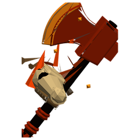
Dragonclaw AxeIts edge is a single curved claw.Carried out of Elephant Grove.A 1H Slashing weapon.Grows stronger as you do.Wants warriors, rangers and shamans only.Only one at a time and unique.
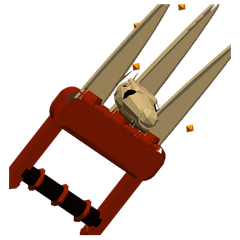
Dragonclaw FistsThree claws on a gauntlet, worn over the fist.Carried out of Elephant Grove.A Piercing weapon.Grows stronger as you do.Wants warriors, rogues and rangers only.Only one at a time and unique.
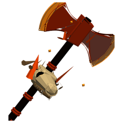
Dragonclaw Great AxeTwo claws, back to back, on a haft of dragonbone.Carried out of Elephant Grove.A 2H Blunt weapon.Grows stronger as you do.Wants warriors only.Only one at a time and unique.
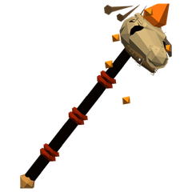
Dragoneye WandA dragon's eye set in the tip. It follows you.Carried out of Elephant Grove.A 1H Blunt weapon.Grows stronger as you do.Wants wizards, magicians, necromancers, clerics and shamans only.Only one at a time and unique.
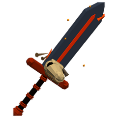
Dragonfang GreatswordThe great fang, ground to an edge.Carried out of Elephant Grove.A 2H Blunt weapon.Grows stronger as you do.Wants warriors only.Only one at a time and unique.
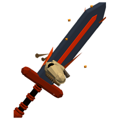
Dragonfang SwordForged around a fang of an elder dragon.Carried out of Elephant Grove.A 1H Slashing weapon.Grows stronger as you do.Wants warriors, rogues and rangers only.Only one at a time and unique.
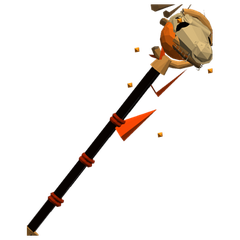
Dragonheart StaffA heart of dragonstone, still warm, in a staff of black wood.Carried out of Elephant Grove.A 2H Blunt weapon.Grows stronger as you do.Wants clerics, wizards, magicians, necromancers and shamans only.Only one at a time and unique.
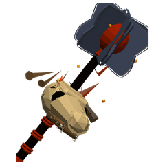
Dragonmaw Great MaceA skull the size of a barrel, on a pole.Carried out of Elephant Grove.A 2H Blunt weapon.Grows stronger as you do.Wants warriors, clerics and shamans only.Only one at a time and unique.
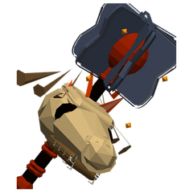
Dragonmaw MaceIts head is a dragon's jaw, still toothed.Carried out of Elephant Grove.A 1H Blunt weapon.Grows stronger as you do.Wants warriors, clerics and shamans only.Only one at a time and unique.
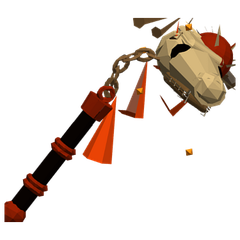
Dragontail FlailA spiked tail-end on a chain.Carried out of Elephant Grove.A 1H Blunt weapon.Grows stronger as you do.Wants warriors, clerics and shamans only.Only one at a time and unique.
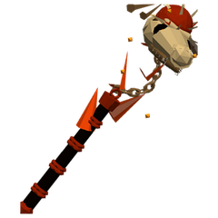
Dragontail Great FlailThe whole tail, swung on a chain.Carried out of Elephant Grove.A 2H Blunt weapon.Grows stronger as you do.Wants warriors only.Only one at a time and unique.
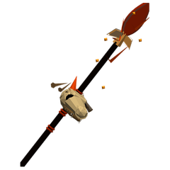
Dragontongue SpearForked at the point, like the tongue it is named for.Carried out of Elephant Grove.A 2H Blunt weapon.Grows stronger as you do.Wants warriors and rangers only.Only one at a time and unique.
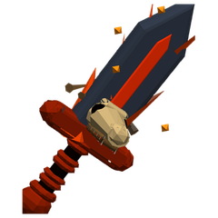
Dragontooth DaggerA dragon's tooth, bound in black leather.Carried out of Elephant Grove.A Piercing weapon.Grows stronger as you do.Wants warriors, rogues, rangers, wizards, magicians and necromancers only.Only one at a time and unique.
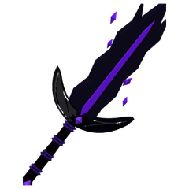
Greatsword of the Endless NightmareThe same dream, heavier.Carried out of Elephant Grove.A 2H Blunt weapon.Grows stronger as you do.Wants warriors only.Only one at a time and unique.
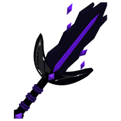
Sword of the Endless NightmareIt hums with a dream you can't wake from.Carried out of Elephant Grove.A 1H Slashing weapon.Grows stronger as you do.Wants warriors, rogues and rangers only.Only one at a time and unique.
Head47
Floppy Fishing HatSold by Merrick in Greenmoor. 1 armour.Worth 2 silver.
Cracked Bone Helm
3 armour.Worth 9 silver.
4 armour.Wants warriors and clerics only.Worth 1 gold and 8 silver.
Handsewn Leather Cap
3 armour.+1 agility.Wants level 6.Worth 7 silver.
3 armour.+2 wisdom, +2 intellect and +12 health.Wants level 7.Never leaves you, only one at a time and worth 5 gold, 8 silver and 8 copper.
3 armour.+2 wisdom, +2 intellect and +5 health.Wants level 7.Never leaves you, only one at a time and worth 6 gold and 5 silver.
6 armour.+1 stamina.Wants level 9 and warriors and clerics only.Worth 5 gold and 2 silver.
6 armour.+3 strength, +4 stamina and +22 health.Wants level 11.Never leaves you, only one at a time and worth 1 platinum, 4 gold, 5 silver and 2 copper.
4 armour.+2 wisdom, +2 intellect and +15 mana.Wants level 15.Worth 1 platinum and 2 gold.
Forged Steel Helm
10 armour.+2 stamina.Wants level 15 and warriors and clerics only.Worth 1 platinum and 3 gold.
9 armour.+2 stamina.Wants level 15 and warriors and clerics only.Worth 1 platinum and 4 gold.
Sandwrap Hood
6 armour.+2 stamina and +2 agility.Wants level 17.Worth 1 platinum and 6 gold.
Rainsilk CapSold by Armorer Kaveh in Rainhold. 5 armour.+3 wisdom, +3 intellect and +25 mana.Wants level 20.Worth 2 platinum and 2 gold.
Tidesteel HelmSold by Armorer Kaveh in Rainhold. 12 armour.+3 stamina.Wants level 20 and warriors and clerics only.Worth 2 platinum and 6 gold.
12 armour.+4 agility, +3 wisdom and +35 health.Wants level 21.Never leaves you, only one at a time and worth 4 platinum and 4 gold.
10 armour.+5 wisdom, +5 intellect and +41 mana.Wants level 22.Never leaves you, only one at a time and worth 5 platinum and 2 gold.
9 armour.+5 wisdom, +5 intellect and +40 mana.Wants level 25.Never leaves you, only one at a time and worth 9 platinum.
11 armour.+5 agility, +4 wisdom, +4 intellect and +25 health.Wants level 25.Never leaves you, only one at a time and worth 10 platinum.
6 armour.+4 wisdom, +4 intellect and +35 mana.Wants level 26.Worth 3 platinum and 6 gold.
Emberforged HelmSold by Smith Tovar in Cinderpass. 15 armour.+4 stamina and +15 health.Wants level 26 and warriors and clerics only.Worth 4 platinum and 2 gold.
12 armour.+6 wisdom, +6 intellect, +30 health and +50 mana.Wants level 28.Never leaves you, only one at a time and worth 10 platinum.
8 armour.+6 wisdom, +6 intellect, +20 health and +60 mana.Wants level 28.Only one at a time and worth 11 platinum.
17 armour.+3 strength, +5 stamina and +40 health.Wants level 29 and warriors, clerics and shamans only.Never leaves you, only one at a time and worth 14 platinum.
12 armour.+6 wisdom, +6 intellect, +30 health and +50 mana.Wants level 29.Never leaves you, only one at a time and worth 14 platinum.
Flameweave CapSold by Armorer Gunhild in Forgehold. 8 armour.+5 wisdom, +5 intellect and +50 mana.Wants level 31.Worth 5 platinum and 4 gold.
Magmasteel HelmSold by Armorer Gunhild in Forgehold. 19 armour.+5 stamina and +25 health.Wants level 31 and warriors and clerics only.Worth 6 platinum and 3 gold.
12 armour.+8 wisdom, +8 intellect and +72 mana.Wants level 32.Never leaves you, only one at a time and worth 9 platinum.
13 armour.+8 wisdom, +8 intellect and +65 mana.Wants level 33.Never leaves you, only one at a time and worth 11 platinum.
11 armour.+7 wisdom, +7 intellect and +70 mana.Wants level 35.Never leaves you, only one at a time and worth 13 platinum.
Galeweave CapSold by Armorer Dagmar in Galehold. 10 armour.+6 wisdom, +6 intellect and +65 mana.Wants level 36.Worth 7 platinum and 8 gold.
Skyforged HelmSold by Armorer Dagmar in Galehold. 23 armour.+6 stamina and +35 health.Wants level 36 and warriors and clerics only.Worth 9 platinum.
13 armour.+8 wisdom, +8 intellect, +40 health and +80 mana.Wants level 37.Never leaves you, only one at a time and worth 23 platinum.
24 armour.+6 strength, +7 stamina and +55 health.Wants level 38 and warriors and clerics only.Never leaves you, only one at a time and worth 30 platinum.
13 armour.+9 wisdom, +9 intellect, +40 health and +90 mana.Wants level 38.Never leaves you, only one at a time and worth 30 platinum.
12 armour.+8 wisdom, +8 intellect, +40 health and +80 mana.Wants level 39.Never leaves you, only one at a time and worth 28 platinum.
26 armour.+6 strength, +8 stamina and +60 health.Wants level 39 and warriors and clerics only.Never leaves you, only one at a time and worth 28 platinum.
Skysilk CapSold by Armorer Dagmar in Galehold. 12 armour.+7 wisdom, +7 intellect and +75 mana.Wants level 41.Worth 9 platinum and 4 gold.
Stormcrest HelmSold by Armorer Dagmar in Galehold. 26 armour.+7 stamina and +42 health.Wants level 41 and warriors and clerics only.Worth 11 platinum.
29 armour.+7 strength, +9 stamina and +70 health.Wants level 44 and warriors and clerics only.Never leaves you, only one at a time and worth 38 platinum.
15 armour.+10 wisdom, +10 intellect, +50 health and +100 mana.Wants level 44.Never leaves you, only one at a time and worth 42 platinum.
16 armour.+9 wisdom, +9 intellect, +55 health and +100 mana.Wants level 45.Never leaves you, only one at a time and worth 44 platinum.
Starweave CapSold by Armorer Ottilie in Barrowhold. 14 armour.+8 wisdom, +8 intellect and +85 mana.Wants level 46.Worth 11 platinum and 2 gold.
Eclipsed HelmSold by Armorer Ottilie in Barrowhold. 29 armour.+8 stamina and +50 health.Wants level 46 and warriors and clerics only.Worth 13 platinum and 5 gold.
17 armour.+11 wisdom, +11 intellect, +60 health and +120 mana.Wants level 50.Never leaves you, only one at a time and worth 56 platinum.
32 armour.+10 strength, +11 stamina, +8 wisdom, +8 intellect, +110 health and +80 mana.Wants level 51.Never leaves you, only one at a time and worth 80 platinum.
Arms53
Cloth Sleeves
1 armour.Worth 8 copper.
Gloomfang Mantle
5 armour.+1 stamina and +2 agility.Wants level 8.Never leaves you, only one at a time and worth 7 gold.
5 armour.+2 stamina and +10 health.Wants level 8.Never leaves you, only one at a time and worth 7 gold.
5 armour.Wants level 9 and warriors and clerics only.Worth 4 gold and 8 silver.
6 armour.+2 strength, +2 stamina and +15 health.Wants level 9.Never leaves you, only one at a time and worth 9 gold.
5 armour.+1 strength and +2 stamina.Wants level 10.Worth 4 gold and 2 silver.
8 armour.+2 stamina and +2 agility.Wants level 10.Never leaves you, only one at a time and worth 5 gold and 2 silver.
5 armour.+3 stamina, +3 agility and +17 health.Wants level 12.Never leaves you, only one at a time and worth 1 platinum, 7 gold, 2 silver and 8 copper.
5 armour.+3 strength, +3 agility and +17 health.Wants level 12.Never leaves you, only one at a time and worth 1 platinum, 7 gold, 2 silver and 8 copper.
6 armour.+3 stamina, +2 wisdom, +2 intellect and +18 health.Wants level 13.Never leaves you, only one at a time and worth 1 platinum and 9 gold.
7 armour.+1 strength.Wants level 15 and warriors and clerics only.Worth 1 platinum and 1 gold.
6 armour.+2 stamina, +2 agility and +15 health.Wants level 15.Never leaves you, only one at a time and worth 1 platinum and 6 gold.
5 armour.+3 stamina, +3 agility and +20 health.Wants level 15.Never leaves you, only one at a time and worth 2 platinum and 7 gold.
Tidesteel VambracesSold by Armorer Kaveh in Rainhold. 9 armour.+2 strength.Wants level 20 and warriors and clerics only.Worth 2 platinum.
8 armour.+2 stamina, +3 agility and +20 health.Wants level 20.Never leaves you, only one at a time and worth 3 platinum.
9 armour.+3 stamina, +4 agility and +25 health.Wants level 21.Never leaves you, only one at a time and worth 7 platinum.
12 armour.+4 strength and +4 stamina.Wants level 22.Never leaves you, only one at a time and worth 5 platinum.
11 armour.+3 stamina, +5 agility and +25 health.Wants level 24.Never leaves you, only one at a time and worth 8 platinum.
10 armour.+3 stamina, +4 agility and +20 health.Wants level 24.Never leaves you, only one at a time and worth 8 platinum.
13 armour.+5 stamina and +4 agility.Wants level 25.Never leaves you, only one at a time and worth 7 platinum.
Emberforged VambracesSold by Smith Tovar in Cinderpass. 11 armour.+3 strength.Wants level 26 and warriors and clerics only.Worth 3 platinum and 2 gold.
12 armour.+4 stamina, +5 agility and +30 health.Wants level 28.Only one at a time and worth 11 platinum.
12 armour.+4 strength, +4 agility and +5% attack speed.Wants level 28.Never leaves you, only one at a time and worth 13 platinum.
Magmasteel VambracesSold by Armorer Gunhild in Forgehold. 14 armour.+4 strength.Wants level 31 and warriors and clerics only.Worth 4 platinum and 8 gold.
13 armour.+5 stamina, +5 agility and +30 health.Wants level 31.Never leaves you, only one at a time and worth 16 platinum.
14 armour.+4 stamina and +5 agility.Wants level 32.Never leaves you, only one at a time and worth 9 platinum.
15 armour.+4 stamina and +5 agility.Wants level 33.Never leaves you, only one at a time and worth 11 platinum.
12 armour.+5 stamina, +4 agility and +45 health.Wants level 33.Never leaves you, only one at a time and worth 20 platinum.
15 armour.+6 wisdom, +6 intellect and +50 mana.Wants level 35.Never leaves you, only one at a time and worth 13 platinum.
Skyforged VambracesSold by Armorer Dagmar in Galehold. 17 armour.+5 strength.Wants level 36 and warriors and clerics only.Worth 7 platinum.
17 armour.+5 strength and +5 stamina.Wants level 36.Never leaves you, only one at a time and worth 13 platinum.
12 armour.+5 stamina, +7 agility and +44 health.Wants level 36.Never leaves you, only one at a time and worth 15 platinum, 5 gold, 5 silver and 2 copper.
16 armour.+5 stamina, +6 agility and +40 health.Wants level 37.Never leaves you, only one at a time and worth 22 platinum.
14 armour.+6 stamina, +5 agility and +55 health.Wants level 37.Never leaves you, only one at a time and worth 24 platinum.
18 armour.+6 stamina and +6 agility.Wants level 38.Never leaves you, only one at a time and worth 15 platinum.
18 armour.+6 stamina, +7 agility and +55 health.Wants level 39.Never leaves you, only one at a time and worth 32 platinum.
22 armour.+7 strength, +7 stamina and +50 health.Wants level 40 and warriors and clerics only.Never leaves you, only one at a time and worth 16 platinum.
19 armour.+6 stamina and +7 agility.Wants level 40.Never leaves you, only one at a time and worth 16 platinum.
Stormcrest VambracesSold by Armorer Dagmar in Galehold. 19 armour.+6 strength.Wants level 41 and warriors and clerics only.Worth 8 platinum and 5 gold.
20 armour.+7 stamina and +7 agility.Wants level 41.Never leaves you, only one at a time and worth 18 platinum.
23 armour.+7 strength, +7 stamina and +55 health.Wants level 41 and warriors and clerics only.Never leaves you, only one at a time and worth 18 platinum.
15 armour.+7 stamina, +6 agility and +60 health.Wants level 41.Never leaves you, only one at a time and worth 26 platinum.
21 armour.+6 stamina and +8 agility.Wants level 43.Never leaves you, only one at a time and worth 20 platinum.
22 armour.+7 strength and +7 stamina.Wants level 43.Never leaves you, only one at a time and worth 20 platinum.
16 armour.+7 stamina, +6 agility and +65 health.Wants level 43.Never leaves you, only one at a time and worth 30 platinum.
16 armour.+7 stamina, +5 wisdom, +5 intellect and +60 health.Wants level 43.Never leaves you, only one at a time and worth 32 platinum.
22 armour.+8 stamina, +8 agility, +70 health and +60 mana.Wants level 45.Never leaves you, only one at a time and worth 46 platinum.
Eclipsed VambracesSold by Armorer Ottilie in Barrowhold. 21 armour.+7 strength.Wants level 46 and warriors and clerics only.Worth 10 platinum.
25 armour.+8 strength, +8 stamina and +65 health.Wants level 47 and warriors and clerics only.Never leaves you, only one at a time and worth 24 platinum.
24 armour.+9 wisdom, +9 intellect, +60 health and +90 mana.Wants level 48.Never leaves you, only one at a time and worth 50 platinum.
24 armour.+8 stamina and +9 agility.Wants level 49.Never leaves you, only one at a time and worth 28 platinum.
22 armour.+8 strength, +8 stamina and +80 health.Wants level 49 and warriors and clerics only.Never leaves you, only one at a time and worth 44 platinum.
Hands54
Cloth Gloves
1 armour.Worth 8 copper.
3 armour.+1 strength.Wants warriors and clerics only.Worth 1 gold and 6 silver.
2 armour.+1 agility and +1 intellect.Wants level 3.Never leaves you, only one at a time and worth 9 silver.
3 armour.+1 strength and +1 stamina.Wants level 4.Never leaves you, only one at a time and worth 1 gold and 6 silver.
3 armour.+2 stamina, +2 agility and +11 health.Wants level 6.Never leaves you, only one at a time and worth 4 gold, 3 silver and 2 copper.
Handsewn Leather Gloves
3 armour.+1 agility.Wants level 7.Worth 7 silver.
Hardened Leather GlovesSold by Silkweaver Dresna in Duskhold, Tovin the Provisioner in Emberhold and Hidemonger Gorra in Murkhold. 4 armour.+1 agility.Wants level 8 and rogues, warriors, shamans and rangers only.Worth 4 gold and 2 silver.
4 armour.+1 strength.Wants level 8 and warriors and clerics only.Worth 4 gold and 6 silver.
4 armour.+2 agility and +1 intellect.Wants level 8.Never leaves you, only one at a time and worth 6 gold.
3 armour.+2 agility, +2 wisdom and +13 health.Wants level 8.Never leaves you, only one at a time and worth 7 gold, 6 silver and 8 copper.
Silkweave Mitts
3 armour.+2 wisdom, +2 intellect and +10 mana.Wants level 11.Worth 2 gold.
5 armour.+3 agility, +3 wisdom and +17 health.Wants level 12.Never leaves you, only one at a time and worth 1 platinum, 7 gold, 2 silver and 8 copper.
3 armour.+2 wisdom, +2 intellect and +10 mana.Wants level 15.Worth 9 gold.
6 armour.+1 strength.Wants level 15 and warriors and clerics only.Worth 1 platinum.
5 armour.+3 strength and +2 agility.Wants level 17.Never leaves you, only one at a time and worth 2 platinum and 4 gold.
7 armour.+2 strength and +3 agility.Wants level 19.Never leaves you, only one at a time and worth 2 platinum and 4 gold.
7 armour.+2 strength and +4 agility.Wants level 19.Never leaves you, only one at a time and worth 4 platinum.
Frogskin Gloves
7 armour.+4 agility.Wants level 20.Worth 1 platinum and 4 gold.
Rainsilk GlovesSold by Armorer Kaveh in Rainhold. 4 armour.+3 wisdom, +3 intellect and +15 mana.Wants level 20.Worth 1 platinum and 7 gold.
Sharkskin GlovesSold by Armorer Kaveh in Rainhold. 6 armour.+2 agility.Wants level 20 and rogues, warriors, shamans and rangers only.Worth 1 platinum and 8 gold.
Tidesteel GauntletsSold by Armorer Kaveh in Rainhold. 8 armour.+2 strength.Wants level 20 and warriors and clerics only.Worth 1 platinum and 9 gold.
8 armour.+3 strength, +3 stamina and +1 health regeneration.Wants level 20.Never leaves you, only one at a time and worth 2 platinum and 6 gold.
6 armour.+4 wisdom, +4 intellect and +25 mana.Wants level 22.Never leaves you, only one at a time and worth 5 platinum.
9 armour.+4 agility, +4 wisdom and +25 health.Wants level 22.Never leaves you, only one at a time and worth 5 platinum and 8 gold.
5 armour.+4 wisdom, +4 intellect and +20 mana.Wants level 26.Worth 2 platinum and 7 gold.
Cinderscale GlovesSold by Smith Tovar in Cinderpass. 8 armour.+3 agility.Wants level 26 and rogues, warriors, shamans and rangers only.Worth 2 platinum and 9 gold.
Emberforged GauntletsSold by Smith Tovar in Cinderpass. 10 armour.+3 strength.Wants level 26 and warriors and clerics only.Worth 3 platinum.
10 armour.+3 stamina and +4 agility.Wants level 26 and rogues, warriors, shamans and rangers only.Never leaves you, only one at a time and worth 7 platinum.
11 armour.+4 stamina, +5 agility and +30 health.Wants level 27.Never leaves you, only one at a time and worth 10 platinum.
10 armour.+6 strength, +5 stamina and +37 health.Wants level 30.Never leaves you, only one at a time and worth 10 platinum and 8 gold.
Flameweave GlovesSold by Armorer Gunhild in Forgehold. 7 armour.+5 wisdom, +5 intellect and +30 mana.Wants level 31.Worth 4 platinum.
Emberhide GlovesSold by Armorer Gunhild in Forgehold. 10 armour.+4 agility.Wants level 31 and rogues, warriors, shamans and rangers only.Worth 4 platinum and 4 gold.
Magmasteel GauntletsSold by Armorer Gunhild in Forgehold. 13 armour.+4 strength.Wants level 31 and warriors and clerics only.Worth 4 platinum and 5 gold.
15 armour.+5 strength and +3 stamina.Wants level 31 and warriors and clerics only.Never leaves you, only one at a time and worth 9 platinum.
8 armour.+5 wisdom, +5 intellect and +30 mana.Wants level 33.Never leaves you, only one at a time and worth 11 platinum.
18 armour.+6 strength and +4 stamina.Wants level 35 and warriors and clerics only.Never leaves you, only one at a time and worth 12 platinum.
13 armour.+4 stamina and +6 agility.Wants level 35 and rogues, warriors, shamans and rangers only.Never leaves you, only one at a time and worth 13 platinum.
Galeweave GlovesSold by Armorer Dagmar in Galehold. 9 armour.+6 wisdom, +6 intellect and +40 mana.Wants level 36.Worth 5 platinum and 8 gold.
Windrunner GlovesSold by Armorer Dagmar in Galehold. 12 armour.+5 agility.Wants level 36 and rogues, warriors, shamans and rangers only.Worth 6 platinum and 3 gold.
Skyforged GauntletsSold by Armorer Dagmar in Galehold. 16 armour.+5 strength.Wants level 36 and warriors and clerics only.Worth 6 platinum and 5 gold.
14 armour.+6 strength, +5 stamina and +45 health.Wants level 37.Never leaves you, only one at a time and worth 23 platinum.
15 armour.+5 stamina and +7 agility.Wants level 40 and rogues, warriors, shamans and rangers only.Never leaves you, only one at a time and worth 16 platinum.
Skysilk GlovesSold by Armorer Dagmar in Galehold. 10 armour.+7 wisdom, +7 intellect and +46 mana.Wants level 41.Worth 7 platinum.
Cloudhide GlovesSold by Armorer Dagmar in Galehold. 14 armour.+6 agility.Wants level 41 and rogues, warriors, shamans and rangers only.Worth 7 platinum and 6 gold.
Stormcrest GauntletsSold by Armorer Dagmar in Galehold. 18 armour.+6 strength.Wants level 41 and warriors and clerics only.Worth 8 platinum.
17 armour.+6 stamina and +8 agility.Wants level 43 and rogues, warriors, shamans and rangers only.Never leaves you, only one at a time and worth 20 platinum.
12 armour.+8 wisdom, +8 intellect and +60 mana.Wants level 45.Never leaves you, only one at a time and worth 22 platinum.
14 armour.+5 strength, +7 agility and +50 health.Wants level 45.Never leaves you, only one at a time and worth 44 platinum.
Starweave GlovesSold by Armorer Ottilie in Barrowhold. 11 armour.+8 wisdom, +8 intellect and +52 mana.Wants level 46.Worth 8 platinum and 4 gold.
Umbral GlovesSold by Armorer Ottilie in Barrowhold. 16 armour.+7 agility.Wants level 46 and rogues, warriors, shamans and rangers only.Worth 9 platinum.
Eclipsed GauntletsSold by Armorer Ottilie in Barrowhold. 20 armour.+7 strength.Wants level 46 and warriors and clerics only.Worth 9 platinum and 5 gold.
18 armour.+7 stamina and +9 agility.Wants level 47 and rogues, warriors, shamans and rangers only.Never leaves you, only one at a time and worth 24 platinum.
16 armour.+6 strength, +8 agility and +60 health.Wants level 47.Never leaves you, only one at a time and worth 38 platinum.
Feet47
Worn Sandals
1 armour.Worth 6 copper.
2 armour.+1 agility.Worth 4 silver and 5 copper.
3 armour.Wants warriors and clerics only.Worth 1 gold and 7 silver.
2 armour.+1 stamina and +1 agility.Wants level 2.Never leaves you, only one at a time and worth 9 silver.
2 armour.+1 stamina and +1 agility.Wants level 3.Never leaves you, only one at a time and worth 9 silver.
5 armour.+2 agility.Wants level 7.Worth 4 gold and 5 silver.
Handsewn Leather Boots
3 armour.+2 agility.Wants level 8.Worth 9 silver.
Hardened Leather BootsSold by Silkweaver Dresna in Duskhold, Tovin the Provisioner in Emberhold and Hidemonger Gorra in Murkhold. 4 armour.+1 agility.Wants level 8 and rogues, warriors, shamans and rangers only.Worth 4 gold and 3 silver.
5 armour.Wants level 8 and warriors and clerics only.Worth 4 gold and 7 silver.
4 armour.+2 stamina, +2 agility and +14 health.Wants level 9.Never leaves you, only one at a time and worth 9 gold, 7 silver and 2 copper.
4 armour.+2 stamina, +3 agility and +15 health.Wants level 10.Never leaves you, only one at a time and worth 1 platinum and 2 gold.
6 armour.+2 stamina and +2 agility.Wants level 13.Never leaves you, only one at a time and worth 1 platinum and 5 gold.
6 armour.+2 stamina and +2 agility.Wants level 14.Never leaves you, only one at a time and worth 9 gold.
6 armour.+2 agility.Wants level 15 and rogues, warriors, shamans and rangers only.Worth 1 platinum.
7 armour.+1 agility.Wants level 15 and warriors and clerics only.Worth 1 platinum and 1 gold.
6 armour.+1 stamina and +3 agility.Wants level 16.Never leaves you, only one at a time and worth 1 platinum and 7 gold.
9 armour.+2 stamina and +3 agility.Wants level 18.Never leaves you, only one at a time and worth 3 platinum and 2 gold.
7 armour.+4 stamina, +3 agility and +25 health.Wants level 19.Never leaves you, only one at a time and worth 4 platinum, 3 gold, 3 silver and 2 copper.
Rainsilk SlippersSold by Armorer Kaveh in Rainhold. 4 armour.+2 wisdom, +2 intellect and +10 mana.Wants level 20.Worth 1 platinum and 6 gold.
Sharkskin BootsSold by Armorer Kaveh in Rainhold. 8 armour.+3 agility.Wants level 20 and rogues, warriors, shamans and rangers only.Worth 1 platinum and 9 gold.
Tidesteel BootsSold by Armorer Kaveh in Rainhold. 9 armour.+2 agility.Wants level 20 and warriors and clerics only.Worth 2 platinum.
8 armour.+2 stamina and +4 agility.Wants level 21.Only one at a time and worth 6 platinum.
9 armour.+3 stamina and +3 agility.Wants level 22.Never leaves you, only one at a time and worth 5 platinum.
9 armour.+3 stamina and +4 agility.Wants level 23.Never leaves you, only one at a time and worth 6 platinum.
8 armour.+4 stamina, +5 agility and +30 health.Wants level 24.Never leaves you, only one at a time and worth 6 platinum, 9 gold, 1 silver and 2 copper.
10 armour.+3 stamina, +4 agility and +25 health.Wants level 24.Never leaves you, only one at a time and worth 9 platinum.
Ashweave SlippersSold by Smith Tovar in Cinderpass. 5 armour.+3 wisdom, +3 intellect and +15 mana.Wants level 26.Worth 2 platinum and 6 gold.
Cinderscale BootsSold by Smith Tovar in Cinderpass. 10 armour.+2 stamina and +3 agility.Wants level 26 and rogues, warriors, shamans and rangers only.Worth 3 platinum.
Emberforged BootsSold by Smith Tovar in Cinderpass. 11 armour.+3 agility.Wants level 26 and warriors and clerics only.Worth 3 platinum and 2 gold.
10 armour.+3 stamina and +4 agility.Wants level 28.Never leaves you, only one at a time and worth 9 platinum.
Flameweave SlippersSold by Armorer Gunhild in Forgehold. 7 armour.+4 wisdom, +4 intellect and +22 mana.Wants level 31.Worth 3 platinum and 9 gold.
Emberhide BootsSold by Armorer Gunhild in Forgehold. 13 armour.+3 stamina and +4 agility.Wants level 31 and rogues, warriors, shamans and rangers only.Worth 4 platinum and 5 gold.
Magmasteel BootsSold by Armorer Gunhild in Forgehold. 14 armour.+4 agility.Wants level 31 and warriors and clerics only.Worth 4 platinum and 8 gold.
15 armour.+4 stamina and +6 agility.Wants level 35 and rogues, warriors, shamans and rangers only.Never leaves you, only one at a time and worth 12 platinum.
Galeweave SlippersSold by Armorer Dagmar in Galehold. 9 armour.+5 wisdom, +5 intellect and +30 mana.Wants level 36.Worth 5 platinum and 6 gold.
Windrunner BootsSold by Armorer Dagmar in Galehold. 16 armour.+4 stamina and +5 agility.Wants level 36 and rogues, warriors, shamans and rangers only.Worth 6 platinum and 5 gold.
Skyforged BootsSold by Armorer Dagmar in Galehold. 17 armour.+5 agility.Wants level 36 and warriors and clerics only.Worth 7 platinum.
17 armour.+5 stamina and +6 agility.Wants level 36 and rogues, warriors, shamans and rangers only.Never leaves you, only one at a time and worth 13 platinum.
Skysilk SlippersSold by Armorer Dagmar in Galehold. 10 armour.+6 wisdom, +6 intellect and +35 mana.Wants level 41.Worth 6 platinum and 8 gold.
Cloudhide BootsSold by Armorer Dagmar in Galehold. 18 armour.+5 stamina and +6 agility.Wants level 41 and rogues, warriors, shamans and rangers only.Worth 7 platinum and 8 gold.
Stormcrest BootsSold by Armorer Dagmar in Galehold. 19 armour.+6 agility.Wants level 41 and warriors and clerics only.Worth 8 platinum and 5 gold.
21 armour.+7 stamina and +6 agility.Wants level 42 and warriors and clerics only.Never leaves you, only one at a time and worth 18 platinum.
22 armour.+7 stamina and +8 agility.Wants level 45 and rogues, warriors, shamans and rangers only.Never leaves you, only one at a time and worth 22 platinum.
Starweave SlippersSold by Armorer Ottilie in Barrowhold. 11 armour.+7 wisdom, +7 intellect and +40 mana.Wants level 46.Worth 8 platinum and 2 gold.
Umbral BootsSold by Armorer Ottilie in Barrowhold. 20 armour.+6 stamina and +7 agility.Wants level 46 and rogues, warriors, shamans and rangers only.Worth 9 platinum and 3 gold.
Eclipsed BootsSold by Armorer Ottilie in Barrowhold. 21 armour.+7 agility.Wants level 46 and warriors and clerics only.Worth 10 platinum.
24 armour.+8 stamina and +9 agility.Wants level 49 and rogues, warriors, shamans and rangers only.Never leaves you, only one at a time and worth 28 platinum.
Neck42
Bone Charm
+1 wisdom and +1 intellect.Worth 3 silver.
Gnoll Fang Necklace
+2 strength.Worth 7 silver.
Glimmerdust PendantA pinch of Glimmerwing's wing-dust sealed in glass. It never quite goes dark.Dropped by Glimmerwing. +1 wisdom, +1 intellect and +8 mana.Only one at a time and worth 2 gold and 2 silver.
Leatherwing CharmA bat's claw on a thong, taken from the oldest thing that hangs in the Wellspring's dark.Dropped by Old Leatherwing. +2 agility and +5 health.Only one at a time and worth 2 gold and 2 silver.
Bone-Carved Talisman
+2 wisdom and +5 health.Only one at a time and worth 3 gold and 8 silver.
2 armour.+2 wisdom, +7 health and +7 mana.Wants level 4.Never leaves you, only one at a time and worth 5 gold.
3 armour.+2 wisdom, +2 intellect, +20 health and +20 mana.Wants level 9.Never leaves you, only one at a time and worth 1 platinum and 1 gold.
Silver Locket
2 armour.+2 stamina, +2 wisdom and +10 health.Wants level 10.Worth 7 gold and 7 silver.
3 armour.+2 stamina, +2 wisdom, +2 intellect, +20 health and +20 mana.Wants level 11.Never leaves you, only one at a time and worth 1 platinum and 8 gold.
3 armour.+3 wisdom, +3 intellect, +17 health and +20 mana.Wants level 12.Never leaves you, only one at a time and worth 1 platinum, 7 gold, 2 silver and 8 copper.
2 armour.+3 wisdom, +3 intellect, +10 health and +20 mana.Wants level 12.Never leaves you, only one at a time and worth 1 platinum and 8 gold.
3 armour.+3 wisdom, +3 intellect, +20 health and +20 mana.Wants level 16.Never leaves you, only one at a time and worth 3 platinum and 2 gold.
2 armour.+3 wisdom, +3 intellect and +30 mana.Wants level 17.Never leaves you, only one at a time and worth 2 platinum and 2 gold.
4 armour.+3 stamina, +4 wisdom and +23 health.Wants level 17.Never leaves you, only one at a time and worth 3 platinum, 4 gold, 6 silver and 8 copper.
4 armour.+3 strength, +4 agility and +30 health.Wants level 19.Never leaves you, only one at a time and worth 3 platinum and 2 gold.
4 armour.+4 stamina, +3 wisdom, +3 intellect, +35 health and +30 mana.Wants level 19.Never leaves you, only one at a time and worth 6 platinum.
4 armour.+3 stamina, +4 wisdom, +25 health and +25 mana.Wants level 19.Never leaves you, only one at a time and worth 6 platinum.
3 armour.+4 wisdom, +4 intellect and +45 mana.Wants level 20.Never leaves you, only one at a time and worth 3 platinum.
5 armour.+4 stamina, +4 wisdom, +4 intellect, +40 health and +40 mana.Wants level 22.Never leaves you, only one at a time and worth 8 platinum.
7 armour.+4 strength, +6 stamina and +35 health.Wants level 23.Never leaves you, only one at a time and worth 6 platinum.
5 armour.+4 wisdom, +4 intellect, +30 health and +40 mana.Wants level 23.Never leaves you, only one at a time and worth 8 platinum.
5 armour.+5 wisdom, +5 intellect, +25 health and +45 mana.Wants level 24.Never leaves you, only one at a time and worth 9 platinum.
6 armour.+5 strength, +4 stamina and +35 health.Wants level 25.Never leaves you, only one at a time and worth 9 platinum.
6 armour.+3 strength, +5 stamina and +50 health.Wants level 28.Never leaves you, only one at a time and worth 11 platinum.
6 armour.+5 wisdom, +5 intellect and +45 mana.Wants level 28.Never leaves you, only one at a time and worth 12 platinum.
6 armour.+6 wisdom, +6 intellect, +35 health and +70 mana.Wants level 28.Never leaves you, only one at a time and worth 14 platinum.
7 armour.+6 wisdom, +6 intellect and +55 mana.Wants level 31.Never leaves you, only one at a time and worth 16 platinum.
9 armour.+7 strength, +5 agility and +53 health.Wants level 33.Never leaves you, only one at a time and worth 16 platinum.
10 armour.+5 strength, +8 stamina and +58 health.Wants level 34.Never leaves you, only one at a time and worth 12 platinum.
7 armour.+7 wisdom, +7 intellect, +40 health and +70 mana.Wants level 35.Never leaves you, only one at a time and worth 21 platinum.
8 armour.+7 stamina and +70 health.Wants level 35.Never leaves you, only one at a time and worth 24 platinum.
8 armour.+7 wisdom, +7 intellect and +70 mana.Wants level 37.Never leaves you, only one at a time and worth 20 platinum.
9 armour.+7 wisdom, +7 intellect and +70 mana.Wants level 38.Never leaves you, only one at a time and worth 15 platinum.
10 armour.+6 strength, +8 stamina and +80 health.Wants level 39.Never leaves you, only one at a time and worth 32 platinum.
9 armour.+8 wisdom, +8 intellect, +50 health and +80 mana.Wants level 41.Never leaves you, only one at a time and worth 26 platinum.
11 armour.+9 wisdom, +9 intellect and +95 mana.Wants level 44.Never leaves you, only one at a time and worth 38 platinum.
12 armour.+9 wisdom, +9 intellect and +100 mana.Wants level 44.Never leaves you, only one at a time and worth 42 platinum.
12 armour.+9 strength, +9 stamina and +95 health.Wants level 45.Never leaves you, only one at a time and worth 42 platinum.
13 armour.+9 strength, +9 stamina and +100 health.Wants level 46.Never leaves you, only one at a time and worth 46 platinum.
13 armour.+10 wisdom, +10 intellect, +60 health and +110 mana.Wants level 46.Never leaves you, only one at a time and worth 46 platinum.
14 armour.+11 wisdom, +11 intellect, +70 health and +130 mana.Wants level 50.Never leaves you, only one at a time and worth 56 platinum.
15 armour.+10 strength, +10 stamina and +120 health.Wants level 51.Never leaves you, only one at a time and worth 62 platinum.
Rings44
Tarnished Ring
+1 stamina.Worth 2 silver and 5 copper.
Copper Band
+1 wisdom and +1 intellect.Worth 3 silver and 5 copper.
Coilback's Scale BandDropped by Coilback. +2 stamina and +4 health.Only one at a time and worth 2 gold.
2 armour.+2 wisdom, +2 intellect and +10 mana.Only one at a time and worth 1 platinum and 5 gold.
1 armour.+2 wisdom, +2 intellect and +10 mana.Wants level 6.Never leaves you, only one at a time and worth 3 gold and 2 silver.
+1 strength, +2 stamina and +10 health.Wants level 6.Never leaves you, only one at a time and worth 7 gold.
Silver Band
1 armour.+1 stamina, +1 agility, +1 wisdom and +1 intellect.Wants level 8.Worth 6 gold and 3 silver.
1 armour.+2 wisdom, +2 intellect and +10 mana.Wants level 9.Never leaves you, only one at a time and worth 5 gold.
1 armour.+2 stamina and +1 wisdom.Wants level 9.Never leaves you, only one at a time and worth 5 gold.
3 armour.+3 wisdom, +3 intellect, +19 health and +25 mana.Wants level 14.Never leaves you, only one at a time and worth 2 platinum, 3 gold, 5 silver and 2 copper.
Engraved Silver Ring
2 armour.+1 strength, +2 stamina, +2 wisdom and +2 intellect.Wants level 15.Worth 1 platinum, 2 gold and 7 silver.
3 armour.+3 wisdom, +3 intellect and +23 mana.Wants level 16.Never leaves you, only one at a time and worth 1 platinum and 8 gold.
Gold Band
3 armour.+3 stamina, +2 wisdom, +2 intellect and +10 health.Wants level 20.Worth 2 platinum and 8 silver.
4 armour.+3 strength, +4 stamina and +30 health.Wants level 21.Never leaves you, only one at a time and worth 7 platinum.
4 armour.+4 stamina, +3 agility and +25 health.Wants level 22.Never leaves you, only one at a time and worth 5 platinum and 8 gold.
4 armour.+4 wisdom, +4 intellect and +30 mana.Wants level 23.Never leaves you, only one at a time and worth 6 platinum.
5 armour.+4 stamina, +3 wisdom, +3 intellect and +35 health.Wants level 25.Never leaves you, only one at a time and worth 8 platinum and 5 gold.
5 armour.+5 stamina and +40 health.Wants level 25.Never leaves you, only one at a time and worth 9 platinum.
5 armour.+4 stamina, +3 agility, +3 wisdom and +35 health.Wants level 25.Never leaves you, only one at a time and worth 9 platinum.
Jeweled Gold Ring
4 armour.+3 strength, +3 stamina, +3 wisdom and +15 health.Wants level 26.Worth 3 platinum, 7 gold and 7 silver.
5 armour.+4 stamina, +3 agility and +30 health.Wants level 27.Never leaves you, only one at a time and worth 9 platinum.
4 armour.+4 wisdom, +4 intellect and +40 mana.Wants level 27.Only one at a time and worth 9 platinum.
5 armour.+4 strength, +4 stamina and +30 health.Wants level 28.Never leaves you, only one at a time and worth 9 platinum.
7 armour.+4 strength, +5 stamina and +41 health.Wants level 31.Never leaves you, only one at a time and worth 9 platinum.
6 armour.+5 strength, +4 agility and +35 health.Wants level 33.Never leaves you, only one at a time and worth 11 platinum.
6 armour.+4 stamina, +60 health and +3 health regeneration.Wants level 34.Never leaves you, only one at a time and worth 20 platinum.
8 armour.+5 stamina, +8 agility and +46 health.Wants level 35.Never leaves you, only one at a time and worth 12 platinum.
7 armour.+6 wisdom, +6 intellect and +60 mana.Wants level 35.Never leaves you, only one at a time and worth 24 platinum.
Starsilver Ring
5 armour.+4 stamina, +4 agility, +4 wisdom and +25 health.Wants level 36.Worth 10 platinum, 1 gold and 4 silver.
7 armour.+5 strength, +5 stamina and +45 health.Wants level 36.Never leaves you, only one at a time and worth 13 platinum.
6 armour.+6 stamina, +5 wisdom, +5 intellect, +50 health and +50 mana.Wants level 37.Never leaves you, only one at a time and worth 24 platinum.
7 armour.+6 wisdom, +6 intellect and +60 mana.Wants level 38.Never leaves you, only one at a time and worth 15 platinum.
8 armour.+6 strength, +6 stamina and +50 health.Wants level 38.Never leaves you, only one at a time and worth 15 platinum.
Moonsilver Ring
6 armour.+4 strength, +5 stamina, +4 intellect and +30 health.Wants level 41.Worth 16 platinum, 6 gold and 2 silver.
8 armour.+7 wisdom, +7 intellect and +75 mana.Wants level 41.Never leaves you, only one at a time and worth 18 platinum.
8 armour.+7 wisdom, +7 intellect and +75 mana.Wants level 42.Never leaves you, only one at a time and worth 18 platinum.
9 armour.+7 wisdom, +7 intellect and +80 mana.Wants level 43.Never leaves you, only one at a time and worth 20 platinum.
9 armour.+7 strength, +7 stamina and +60 health.Wants level 45.Never leaves you, only one at a time and worth 22 platinum.
Eclipse Band
7 armour.+5 stamina, +5 agility, +5 wisdom and +35 health.Wants level 46.Worth 27 platinum, 2 gold and 6 silver.
10 armour.+8 wisdom, +8 intellect and +90 mana.Wants level 47.Never leaves you, only one at a time and worth 24 platinum.
10 armour.+9 wisdom, +9 intellect, +45 health and +95 mana.Wants level 48.Never leaves you, only one at a time and worth 50 platinum.
10 armour.+8 strength, +8 stamina and +70 health.Wants level 49.Never leaves you, only one at a time and worth 28 platinum.
9 armour.+8 stamina, +6 agility, +5 wisdom and +70 health.Wants level 49.Never leaves you, only one at a time and worth 44 platinum.
12 armour.+10 strength, +10 stamina, +10 agility, +90 health and +60 mana.Wants level 52.Only one at a time and worth 90 platinum.
Trade goods and components252
Tattered Boot
Stacks to 5 and worth 1 copper.
Stacks to 20 and worth 2 copper.
Stacks to 100 and worth 2 copper.
Stacks to 20 and worth 2 copper.
Stacks to 20 and worth 2 copper.
Stacks to 20 and worth 2 copper.
Stacks to 20 and worth 3 copper.
Stacks to 20 and worth 3 copper.
Stacks to 20 and worth 3 copper.
Stacks to 20 and worth 3 copper.
Stacks to 20 and worth 3 copper.
Rat SinewA pale length of sinew from a Greenmoor rat, stained faintly green and smelling of bad water. Tough, though.Dropped by a large rat and wanted for A Line That'll Hold (1). Stacks to 100 and worth 3 copper.
Stacks to 20 and worth 3 copper.
Stacks to 20 and worth 4 copper.
Stacks to 20 and worth 4 copper.
Stacks to 100 and worth 4 copper.
Stacks to 20 and worth 4 copper.
Stacks to 20 and worth 4 copper.
Stacks to 20 and worth 5 copper.
Stacks to 20 and worth 5 copper.
Stacks to 20 and worth 5 copper.
Stacks to 20 and worth 6 copper.
Stacks to 20 and worth 6 copper.
Stacks to 20 and worth 6 copper.
Stacks to 20 and worth 6 copper.
Stacks to 20 and worth 6 copper.
Stacks to 20 and worth 6 copper.
Stacks to 20 and worth 6 copper.
Stacks to 20 and worth 6 copper.
Stacks to 20 and worth 7 copper.
Stacks to 20 and worth 7 copper.
Stacks to 10 and worth 8 copper.
Stacks to 100 and worth 8 copper.
Stacks to 20 and worth 8 copper.
Stacks to 20 and worth 8 copper.
Stacks to 20 and worth 8 copper.
Mud Carp
Stacks to 20 and worth 8 copper.
Stacks to 20 and worth 8 copper.
Stacks to 20 and worth 8 copper.
Stacks to 20 and worth 8 copper.
Stacks to 20 and worth 8 copper.
Stacks to 20 and worth 8 copper.
Stacks to 20 and worth 8 copper.
Stacks to 20 and worth 8 copper.
Stacks to 20 and worth 9 copper.
Stacks to 20 and worth 9 copper.
Stacks to 20 and worth 9 copper.
Stacks to 20 and worth 1 silver.
Stacks to 20 and worth 1 silver.
Stacks to 20 and worth 1 silver.
Stacks to 20 and worth 1 silver.
Stacks to 20 and worth 1 silver.
Stacks to 20 and worth 1 silver.
Stacks to 20 and worth 1 silver.
Stacks to 20 and worth 1 silver.
Stacks to 20 and worth 1 silver.
Stacks to 20 and worth 1 silver.
Stacks to 20 and worth 1 silver.
Stacks to 20 and worth 1 silver.
Stacks to 100 and worth 1 silver and 2 copper.
Stacks to 20 and worth 1 silver and 2 copper.
Stacks to 20 and worth 1 silver and 2 copper.
Stacks to 20 and worth 1 silver and 2 copper.
Stacks to 100 and worth 1 silver and 2 copper.
Stacks to 20 and worth 1 silver and 2 copper.
Stacks to 20 and worth 1 silver and 2 copper.
Stacks to 20 and worth 1 silver and 2 copper.
Stacks to 20 and worth 1 silver and 2 copper.
River Trout
Stacks to 20 and worth 1 silver and 2 copper.
Stacks to 20 and worth 1 silver and 2 copper.
Stacks to 20 and worth 1 silver and 2 copper.
Stacks to 20 and worth 1 silver and 4 copper.
Stacks to 20 and worth 1 silver and 4 copper.
Stacks to 20 and worth 1 silver and 4 copper.
Stacks to 20 and worth 1 silver and 4 copper.
Stacks to 20 and worth 1 silver and 4 copper.
Stacks to 20 and worth 1 silver and 4 copper.
Stacks to 20 and worth 1 silver and 4 copper.
Stacks to 20 and worth 1 silver and 4 copper.
Stacks to 20 and worth 1 silver and 4 copper.
Bolt of Wool
Stacks to 20 and worth 1 silver and 5 copper.
Stacks to 100 and worth 1 silver and 5 copper.
Tanned Leather
Stacks to 20 and worth 1 silver and 5 copper.
Stacks to 20 and worth 1 silver and 5 copper.
Stacks to 20 and worth 1 silver and 6 copper.
Stacks to 20 and worth 1 silver and 6 copper.
Stacks to 20 and worth 1 silver and 6 copper.
Stacks to 20 and worth 1 silver and 8 copper.
Stacks to 20 and worth 1 silver and 8 copper.
Stacks to 20 and worth 1 silver and 8 copper.
Stacks to 20 and worth 2 silver.
Stacks to 20 and worth 2 silver.
Stacks to 20 and worth 2 silver.
Stacks to 20 and worth 2 silver.
Stacks to 20 and worth 2 silver.
Stacks to 20 and worth 2 silver.
Stacks to 20 and worth 2 silver.
Stacks to 20 and worth 2 silver.
Stacks to 20 and worth 2 silver.
Stacks to 20 and worth 2 silver.
Stacks to 20 and worth 2 silver.
Stacks to 20 and worth 2 silver.
Stacks to 20 and worth 2 silver.
Stacks to 20 and worth 2 silver.
Stacks to 20 and worth 2 silver.
Stacks to 20 and worth 2 silver.
Stacks to 20 and worth 2 silver.
Stacks to 20 and worth 2 silver and 2 copper.
Jungle Catfish
Stacks to 20 and worth 2 silver and 4 copper.
Stacks to 20 and worth 2 silver and 4 copper.
Stacks to 20 and worth 2 silver and 4 copper.
Stacks to 20 and worth 2 silver and 4 copper.
Iron Bar
Stacks to 20 and worth 2 silver and 5 copper.
Stacks to 100 and worth 2 silver and 5 copper.
Stacks to 20 and worth 2 silver and 6 copper.
Stacks to 20 and worth 2 silver and 6 copper.
Stacks to 20 and worth 2 silver and 6 copper.
Stacks to 20 and worth 2 silver and 8 copper.
Stacks to 20 and worth 2 silver and 8 copper.
Stacks to 20 and worth 2 silver and 8 copper.
Stacks to 20 and worth 2 silver and 8 copper.
Stacks to 20 and worth 2 silver and 8 copper.
Stacks to 20 and worth 2 silver and 8 copper.
Monsoon Eel
Stacks to 20 and worth 2 silver and 8 copper.
Stacks to 20 and worth 2 silver and 8 copper.
Stacks to 100 and worth 3 silver.
Stacks to 100 and worth 3 silver.
Bolt of Spider Silk
Stacks to 20 and worth 3 silver.
Stacks to 20 and worth 3 silver.
Stacks to 20 and worth 3 silver.
Stacks to 20 and worth 3 silver.
Stacks to 20 and worth 3 silver.
Stacks to 20 and worth 3 silver.
Stacks to 20 and worth 3 silver.
Stacks to 100 and worth 3 silver.
Stacks to 20 and worth 3 silver.
Stacks to 20 and worth 3 silver.
Stacks to 20 and worth 3 silver.
Stacks to 20 and worth 3 silver.
Stacks to 20 and worth 3 silver and 2 copper.
Stacks to 100 and worth 3 silver and 2 copper.
Stacks to 20 and worth 3 silver and 2 copper.
Stacks to 20 and worth 3 silver and 4 copper.
Stacks to 20 and worth 3 silver and 4 copper.
Stacks to 20 and worth 3 silver and 4 copper.
Stacks to 20 and worth 3 silver and 4 copper.
Stacks to 100 and worth 3 silver and 5 copper.
Stacks to 20 and worth 3 silver and 5 copper.
Stacks to 20 and worth 3 silver and 5 copper.
Stacks to 20 and worth 3 silver and 6 copper.
Stacks to 20 and worth 4 silver.
Stacks to 20 and worth 4 silver.
Stacks to 20 and worth 4 silver.
Stacks to 20 and worth 4 silver.
Stacks to 20 and worth 4 silver.
Stacks to 20 and worth 4 silver.
Stacks to 20 and worth 4 silver.
Stacks to 20 and worth 4 silver.
Stacks to 20 and worth 4 silver.
Stacks to 20 and worth 4 silver.
Stacks to 20 and worth 4 silver.
Stacks to 20 and worth 4 silver.
Stacks to 20 and worth 4 silver.
Stacks to 20 and worth 4 silver.
Stacks to 100 and worth 4 silver.
Stacks to 20 and worth 4 silver and 2 copper.
Stacks to 20 and worth 4 silver and 2 copper.
Stacks to 20 and worth 4 silver and 4 copper.
Stacks to 20 and worth 4 silver and 4 copper.
Stacks to 20 and worth 4 silver and 4 copper.
Stacks to 20 and worth 4 silver and 4 copper.
Stacks to 20 and worth 4 silver and 4 copper.
Stacks to 20 and worth 4 silver and 4 copper.
Stacks to 20 and worth 4 silver and 4 copper.
Stacks to 20 and worth 4 silver and 4 copper.
Stacks to 20 and worth 4 silver and 4 copper.
Stacks to 10 and worth 4 silver and 5 copper.
Stacks to 20 and worth 4 silver and 5 copper.
Stacks to 20 and worth 4 silver and 5 copper.
Stacks to 20 and worth 4 silver and 5 copper.
Stacks to 20 and worth 4 silver and 6 copper.
Stacks to 20 and worth 4 silver and 8 copper.
Stacks to 20 and worth 4 silver and 8 copper.
Stacks to 20 and worth 5 silver.
Stacks to 20 and worth 5 silver.
Stacks to 20 and worth 5 silver.
Stacks to 20 and worth 5 silver.
Stacks to 20 and worth 5 silver.
Stacks to 20 and worth 5 silver.
Stacks to 20 and worth 5 silver.
Stacks to 20 and worth 5 silver.
Stacks to 20 and worth 5 silver and 2 copper.
Stacks to 20 and worth 5 silver and 2 copper.
Stacks to 20 and worth 5 silver and 4 copper.
Stacks to 20 and worth 5 silver and 5 copper.
Stacks to 20 and worth 5 silver and 5 copper.
Stacks to 20 and worth 5 silver and 5 copper.
Stacks to 20 and worth 5 silver and 5 copper.
Stacks to 20 and worth 5 silver and 5 copper.
Stacks to 20 and worth 5 silver and 6 copper.
Stacks to 20 and worth 5 silver and 6 copper.
Stacks to 20 and worth 5 silver and 8 copper.
Stacks to 20 and worth 5 silver and 8 copper.
Stacks to 20 and worth 6 silver.
Stacks to 20 and worth 6 silver.
Stacks to 20 and worth 6 silver.
Stacks to 20 and worth 6 silver.
Stacks to 20 and worth 6 silver.
Stacks to 20 and worth 6 silver.
Stacks to 20 and worth 6 silver.
Stacks to 20 and worth 6 silver.
Stacks to 100 and worth 6 silver.
Thick Crocodile Leather
Stacks to 20 and worth 6 silver.
Stacks to 20 and worth 6 silver and 2 copper.
Stacks to 20 and worth 6 silver and 2 copper.
Stacks to 20 and worth 6 silver and 2 copper.
Stacks to 20 and worth 6 silver and 2 copper.
Stacks to 20 and worth 6 silver and 4 copper.
Stacks to 20 and worth 6 silver and 4 copper.
Stacks to 20 and worth 6 silver and 4 copper.
Stacks to 20 and worth 6 silver and 5 copper.
Stacks to 20 and worth 6 silver and 6 copper.
Stacks to 20 and worth 6 silver and 6 copper.
Stacks to 20 and worth 6 silver and 8 copper.
Stacks to 20 and worth 7 silver.
Stacks to 20 and worth 7 silver.
Stacks to 20 and worth 7 silver.
Stacks to 20 and worth 7 silver.
Stacks to 100 and worth 7 silver.
Stacks to 20 and worth 7 silver.
Stacks to 20 and worth 7 silver.
Stacks to 20 and worth 7 silver and 2 copper.
Stacks to 20 and worth 7 silver and 2 copper.
Stacks to 20 and worth 7 silver and 4 copper.
Stacks to 100 and worth 7 silver and 5 copper.
Stacks to 20 and worth 7 silver and 6 copper.
Stacks to 20 and worth 7 silver and 8 copper.
Stacks to 20 and worth 8 silver.
Stacks to 20 and worth 8 silver.
Stacks to 100 and worth 8 silver.
Stacks to 20 and worth 8 silver and 2 copper.
Stacks to 20 and worth 8 silver and 4 copper.
Stacks to 20 and worth 8 silver and 6 copper.
Stacks to 20 and worth 8 silver and 8 copper.
Stacks to 20 and worth 9 silver.
Stacks to 20 and worth 9 silver.
Steel Bar
Stacks to 20 and worth 9 silver.
Stacks to 20 and worth 9 silver.
Stacks to 20 and worth 9 silver and 2 copper.
Stacks to 20 and worth 1 gold and 1 silver.
Stacks to 20 and worth 1 gold and 2 silver.
Rainbow Koi
Stacks to 20 and worth 1 gold and 5 silver.
Oddments180
Blight HeartThe Blightmother's rotten heart, still twitching. Whatever smothered the spring crystal, it beat in here.Dropped by the Blightmother and wanted for The Sour Spring (2). Never leaves you and only one at a time.
Never leaves you and only one at a time.
Never leaves you and only one at a time.
Never leaves you and only one at a time.
Never leaves you and only one at a time.
Never leaves you and only one at a time.
Never leaves you and only one at a time.
Never leaves you and only one at a time.
Never leaves you and only one at a time.
Never leaves you and only one at a time.
Never leaves you and only one at a time.
Knot of Stolen LightA warm violet knot cut from the Lamp-Glutton's belly, pulsing like a slow breath. Every crystal she drank is in here.Dropped by the Lamp-Glutton and wanted for The Dark Below (2). Never leaves you and only one at a time.
Never leaves you and only one at a time.
Musk-Painted LanternA small lantern, cracked and burned dry, found in the Lamp-Glutton's nest. Its glass is smeared with something sweet that moths can't leave alone. Nothing down there lit it by itself.Dropped by the Lamp-Glutton and wanted for A Lamp Left Burning (3). Never leaves you and only one at a time.
Never leaves you and only one at a time.
Never leaves you and only one at a time.
Never leaves you and only one at a time.
Never leaves you and only one at a time.
Never leaves you and only one at a time.
Never leaves you and only one at a time.
Never leaves you and only one at a time.
The Blightmother's Venom SacSwollen, warm, and still dripping. The same sourness Merrick tastes in the water, straight from its source.Dropped by the Blightmother and wanted for Word for Merrick (3). Never leaves you and only one at a time.
Never leaves you and only one at a time.
Never leaves you and only one at a time.
Never leaves you and only one at a time.
Never leaves you and only one at a time.
Never leaves you and only one at a time.
Never leaves you and only one at a time.
Only one at a time and worth 1 silver.
Only one at a time and worth 1 silver.
Only one at a time and worth 1 silver.
Only one at a time and worth 1 silver and 5 copper.
Only one at a time and worth 1 silver and 5 copper.
Only one at a time and worth 2 silver and 5 copper.
Only one at a time and worth 2 silver and 5 copper.
Only one at a time and worth 3 silver and 5 copper.
Only one at a time and worth 3 silver and 5 copper.
Only one at a time and worth 4 silver.
Only one at a time and worth 4 silver.
Only one at a time and worth 4 silver.
Only one at a time and worth 4 silver.
Only one at a time and worth 4 silver.
Only one at a time and worth 4 silver.
Only one at a time and worth 4 silver.
Only one at a time and worth 4 silver.
Smithy HammerA tool: it stays in the forge when you combine.Sold by Provisioner Aelis in Duskhold, Sutler Brannoc in The Broken March and Provisioner Sleesh in Murkhold. Worth 4 silver.
Only one at a time and worth 4 silver.
Only one at a time and worth 4 silver.
Only one at a time and worth 4 silver.
Only one at a time and worth 4 silver.
Only one at a time and worth 4 silver and 5 copper.
Only one at a time and worth 5 silver.
Only one at a time and worth 5 silver.
Only one at a time and worth 5 silver.
Only one at a time and worth 5 silver.
Only one at a time and worth 6 silver.
Only one at a time and worth 6 silver.
Only one at a time and worth 6 silver.
Only one at a time and worth 6 silver.
Never leaves you, only one at a time and worth 6 silver.
Only one at a time and worth 6 silver.
Only one at a time and worth 6 silver.
Only one at a time and worth 6 silver.
Only one at a time and worth 6 silver.
Never leaves you, only one at a time and worth 6 silver.
Only one at a time and worth 6 silver.
Only one at a time and worth 7 silver.
Only one at a time and worth 7 silver.
Only one at a time and worth 7 silver.
Only one at a time and worth 7 silver.
Never leaves you, only one at a time and worth 8 silver.
Only one at a time and worth 8 silver.
Only one at a time and worth 8 silver.
Never leaves you, only one at a time and worth 8 silver.
Only one at a time and worth 8 silver.
Never leaves you, only one at a time and worth 9 silver.
Only one at a time and worth 1 gold.
Never leaves you, only one at a time and worth 1 gold.
Only one at a time and worth 1 gold.
Only one at a time and worth 1 gold.
Only one at a time and worth 1 gold.
Only one at a time and worth 1 gold.
Never leaves you, only one at a time and worth 1 gold and 2 silver.
Never leaves you, only one at a time and worth 1 gold and 2 silver.
Only one at a time and worth 1 gold and 2 silver.
Never leaves you, only one at a time and worth 1 gold and 2 silver.
Only one at a time and worth 1 gold and 2 silver.
Never leaves you, only one at a time and worth 1 gold and 3 silver.
Only one at a time and worth 1 gold and 3 silver.
Never leaves you, only one at a time and worth 1 gold and 4 silver.
Only one at a time and worth 1 gold and 4 silver.
Only one at a time and worth 1 gold and 4 silver.
Only one at a time and worth 1 gold and 5 silver.
Only one at a time and worth 1 gold and 5 silver.
Only one at a time and worth 1 gold and 5 silver.
Only one at a time and worth 1 gold and 5 silver.
Only one at a time and worth 1 gold and 5 silver.
Only one at a time and worth 1 gold and 5 silver.
Only one at a time and worth 1 gold and 5 silver.
Never leaves you, only one at a time and worth 1 gold and 5 silver.
Only one at a time and worth 1 gold and 5 silver.
Only one at a time and worth 1 gold and 5 silver.
Only one at a time and worth 1 gold and 5 silver.
Only one at a time and worth 1 gold and 5 silver.
Only one at a time and worth 1 gold and 5 silver.
Only one at a time and worth 1 gold and 5 silver.
Only one at a time and worth 1 gold and 5 silver.
Only one at a time and worth 1 gold and 5 silver.
Never leaves you, only one at a time and worth 1 gold and 5 silver.
Only one at a time and worth 1 gold and 5 silver.
Never leaves you, only one at a time and worth 1 gold and 5 silver.
Only one at a time and worth 1 gold and 5 silver.
Only one at a time and worth 1 gold and 5 silver.
Only one at a time and worth 1 gold and 7 silver.
Only one at a time and worth 1 gold and 7 silver.
Only one at a time and worth 2 gold.
Only one at a time and worth 2 gold.
Only one at a time and worth 2 gold.
Only one at a time and worth 2 gold.
Only one at a time and worth 2 gold.
Only one at a time and worth 2 gold.
Only one at a time and worth 2 gold.
Only one at a time and worth 2 gold.
Only one at a time and worth 2 gold.
Only one at a time and worth 2 gold.
Only one at a time and worth 2 gold.
Only one at a time and worth 2 gold.
Only one at a time and worth 2 gold.
Only one at a time and worth 2 gold.
Only one at a time and worth 2 gold and 2 silver.
Only one at a time and worth 2 gold and 2 silver.
Only one at a time and worth 2 gold and 5 silver.
Only one at a time and worth 2 gold and 5 silver.
Only one at a time and worth 2 gold and 5 silver.
Only one at a time and worth 2 gold and 5 silver.
Only one at a time and worth 2 gold and 5 silver.
Only one at a time and worth 2 gold and 5 silver.
Only one at a time and worth 2 gold and 5 silver.
Only one at a time and worth 2 gold and 5 silver.
Only one at a time and worth 2 gold and 6 silver.
Only one at a time and worth 2 gold and 6 silver.
Only one at a time and worth 2 gold and 6 silver.
Only one at a time and worth 2 gold and 6 silver.
Only one at a time and worth 2 gold and 6 silver.
Only one at a time and worth 2 gold and 6 silver.
Only one at a time and worth 2 gold and 6 silver.
Only one at a time and worth 2 gold and 6 silver.
Only one at a time and worth 3 gold.
Only one at a time and worth 3 gold.
Only one at a time and worth 3 gold.
Only one at a time and worth 3 gold.
Only one at a time and worth 3 gold.
Only one at a time and worth 3 gold.
Only one at a time and worth 3 gold.
Only one at a time and worth 3 gold.
Only one at a time and worth 3 gold.
Only one at a time and worth 3 gold.
Only one at a time and worth 3 gold.
Only one at a time and worth 3 gold.
Only one at a time and worth 3 gold and 4 silver.
Only one at a time and worth 3 gold and 4 silver.
Only one at a time and worth 3 gold and 4 silver.
Only one at a time and worth 3 gold and 4 silver.
Only one at a time and worth 3 gold and 4 silver.
Only one at a time and worth 3 gold and 4 silver.
Only one at a time and worth 3 gold and 4 silver.
Only one at a time and worth 3 gold and 4 silver.
Only one at a time and worth 3 gold and 4 silver.
Only one at a time and worth 3 gold and 4 silver.
Only one at a time and worth 3 gold and 4 silver.
Only one at a time and worth 3 gold and 4 silver.
Only one at a time and worth 4 gold.
Only one at a time and worth 4 gold.
Only one at a time and worth 4 gold.
Only one at a time and worth 4 gold.
Only one at a time and worth 4 gold.
Only one at a time and worth 4 gold.
Only one at a time and worth 4 gold.
Only one at a time and worth 4 gold.